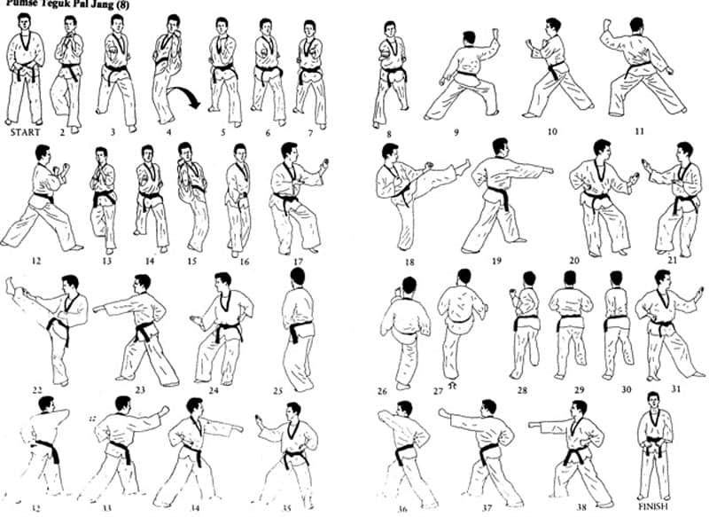

TaeKwonDo Form 8

The TaeKwonDo Form 8 or Poomsae Taegeuk Pal Jang applies the Gon principle of Palgwe. Gon symbolizes the earth, the source of life. Keon is the father, Gon is the mother. The earth is where the creative force of heaven is realized. Gon represents the receptivity of the earth.
It is moist and heavy, sinking into the ground. Gon is also gentle and nurturing. Gon signifies the infinite concentration of Um energy. The earth nurtures in silence and in strength. Gon teaches us the importance of the life force within ourselves, and to respect life in all forms.
Representing the mother earth, from which all life comes, Taegeuk Pal Jang contains all the basic elements of TaeKwonDo, serving both as a review of the beginning forms, and as a foundation of the first Black Belt form.
Besides reviewing techniques already introduced, it adds a Outside Middle Block, a simultaneous grab and uppercut, and a Single Mountain Block.
It is moist and heavy, sinking into the ground. Gon is also gentle and nurturing. Gon signifies the infinite concentration of Um energy. The earth nurtures in silence and in strength. Gon teaches us the importance of the life force within ourselves, and to respect life in all forms.
Representing the mother earth, from which all life comes, Taegeuk Pal Jang contains all the basic elements of TaeKwonDo, serving both as a review of the beginning forms, and as a foundation of the first Black Belt form.
Besides reviewing techniques already introduced, it adds a Outside Middle Block, a simultaneous grab and uppercut, and a Single Mountain Block.
If you want more explanation, press it!
Tips
In performing this form or poomsae as well as all the others, you should think not of executing techniques in a vacuum, but rather of responding to attacks from a number of opponents surrounding you. Step 20: Move into Right Horse Stance, deliver a right middle punch, yell, and turn around back into your Joon Bi Seogi.
You should always turn your head first, look at your imaginary opponent, then perform the required block or attack.
It’s also worth mentioning to listen to your body and don’t force yourself to learn something you personally aren’t ready for yet; in cases like these, practice slowly until you feel comfortable enough to try again!
In performing this form or poomsae as well as all the others, you should think not of executing techniques in a vacuum, but rather of responding to attacks from a number of opponents surrounding you. Step 20: Move into Right Horse Stance, deliver a right middle punch, yell, and turn around back into your Joon Bi Seogi.
You should always turn your head first, look at your imaginary opponent, then perform the required block or attack.
It’s also worth mentioning to listen to your body and don’t force yourself to learn something you personally aren’t ready for yet; in cases like these, practice slowly until you feel comfortable enough to try again!